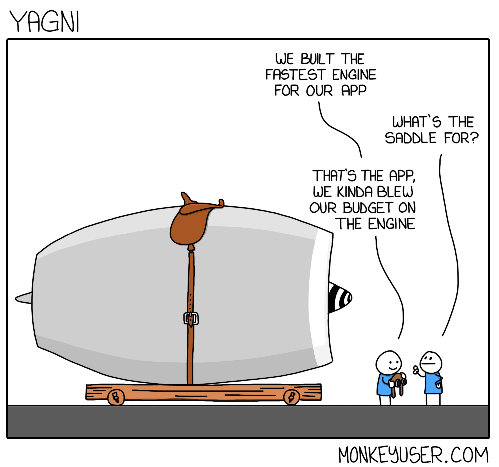

_Overthinking the code
(when eloquence kills readability)
readability > efficiency
maintenance cost -> technical debt
overthinking is technical debt
the reason:


curry docs (lodash)

_Agenda:
- Why does it happen?
- The price of not stopping
- Getting over it :)
?
WHY
_Developers' adolescency
_CV driven development

_I just learnt how to...
those who learn a new technology have a short term issue where it's "technology" driven solutions
_!YAGNI
You
Ain't
Gonna
Need
It
_flexing :)
!
bad practices considered ‘a way of working’
_lack of / improper code review
_dev team starting the journey
_project oriented guys part of a service
!
bad practices considered ‘a way of working’
_management doing micromanagement
_focusing on time-to-market
_no time for refinement
_improper (under-) estimation
bug desc: loading indicator not visible for Austrian
- one codebase, 4 tenants (airlines)
- SCSS with tenant specific variable values
_fix:
_but how?:
_outdated technology
_delivery without bearing in mind maintenance
!
bad practices considered ‘a way of working’
?
PRICE
_Illuminati - confirmed
!
GET OVER IT
_readability!
The most important element of code maintenance
Overly complicated solutions almost always decrease readability, thus increasing maintenance costs.
poor readability == poor code
say NO to 'magic numbers'
_DRY

_YAGNI

_KISS

_SOLID
Single Responsibility

_comments!
- if there is a need to put in a comment, maybe this part deserves its own new function?
- put not only WHAT but also WHY

_Write unit tests
_learn how to say NO
_Software craftsmanship
_Software craftsmanship
_Software craftsmanship
mindset that emphasizes the importance of creating software systems that are not just
functional, but also elegant,
efficient, and maintainable over the long term
_be kind to yourself

!
WRAP UP
Poorly written code (ie. overthinked, with poor readability) is:
- Difficult to understand
- Longer to debug
- Hard to maintain
- Tricky to extend
- hard to share knowledge of (among other devs)
_in code delivery:
readability > efficiency
:)
could it be simplified?
_Questions?